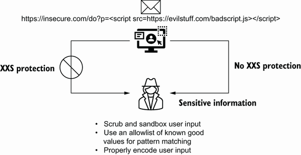
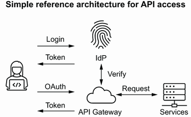
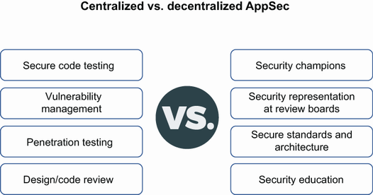

5 Security belongs to ever yone
6 Application security as a service
10h 2m remaining
5 Security belongs to ever yone
Expanding application security through various methods
Building a culture of security that includes education
Exploring the maturity models that can be used in an application security program
Explaining decentralized AppSec in software development
Stop me if you heard this before, but security is everyone’s problem. We’ve all heard this many times, but what does it really mean? In my experience, the ability to scale an application security team to meet the need of a large organization is difficult, if not impossible. Many of the organizations that I have worked with have had hundreds or even thousands of developers. In these organizations, even what I would consider a large application security team was no match for the sheer volume of work in the organization. This means that organizations must find other, more creative ways to bring security to the overall development of software.
As I mentioned in previous chapters, the best defense against attackers is to ensure that all members of the organization are able to understand the security risks that the organization faces and work together to address them. This does not mean that everyone needs to be a security specialist, but having at least basic security knowledge goes a long way. Nothing makes me happier than someone reaching out to me asking about the security impacts to a design choice. This means that they are at least thinking about security and how their choices can affect it. And I’ll admit, I don’t always have the answers, but being able to work through an issue with someone else teaches both of us. I can’t imagine that I’m the only security person who feels that way. Not because we’re actually wanted, but because when more people think this way, the security folks have the right advocates in the organization. Getting to this little bit of heaven requires an organization that has put the effort into building a culture that not only takes security seriously but also thinks about it as much as the security teams do.
I try to draw parallels when I am thinking about security, and one that comes to mind here is your common household. One person in the house is not generally the security person who goes around the house every day making sure that the doors and windows are locked, that the alarm is on, the stove is off, that the cars are locked, and that everything in the house is secure. I suppose that might happen in some households, but the point is that this is not an efficient way to approach the security of the house. In reality, it is the responsibility of everyone in the house to ensure that they are considering the security and safety of the house and those inside. If the smoke detector is out of batteries and begins to beep, yes, maybe the tallest person in the house has to change the battery, but others in the house can hear it beeping and can let the tall person know so they can change the battery.
In an organization, the security team should not be the only ones aware of or looking out for security issues. Yes, they are the ones who typically manage the tools and processes that manage the security risk of the organization, but they don’t always have 100% visibility into all the areas of the organization. More importantly, organizations are releasing new features and functionality all the time. It is unlikely that the application security team has insight into those new features until they are about to be released. That is often too late for the application security team to react, and it becomes more of an exercise in reducing or accepting the identified risk than building security into the design early in the process.
When the organization takes the steps to build a security culture, they will be able to augment the application security team and create more secure code. However, this requires an application security team that has built the frameworks, processes, tools, and education that is needed to enable the development organization to achieve that level of security.
It is extremely difficult to hire enough resources in the application security team that will fit all the needs of the organization. Although every application security team is structured differently and has different needs, most application security teams provide the following core functions:
Threat modeling and risk assessment
Triaging discovered vulnerabilities
DevSecOps and automation support
Secure education and evangelism
Documentation, whitepapers, standards, and requirements development
On a daily basis, the application security team members perform these tasks as their core function, but there is other ad hoc work that happens, such as general consulting on design and strategy across the organization. It is often hard to find the “unicorn” application security person who can do all or even multiple items from the core functions. This requires the application security team to hire multiple people with more focused skill in the core areas. For instance, in order to meet the needs of the functions, the team may hire the following roles:
Security roles in an application security team
Each organization has a different description for common roles. Here are a few of the common application security roles and a brief description:
Security architect—Represent the application security team on strategy in the organization and develop secure architecture, standards, and documentation
Penetration tester—Provide testing of applications for security-related issues and develop summary reports on findings
Application security engineer—Work closely with the application development team to ensure that security is integrated in the development process for the development team
DevSecOps engineer—Take the responsibility of the application security engineer with the added responsibility of automating the processes in the development pipeline
Note This is a very unpopular opinion, but one that a lot of my application security peers share: penetration testers are not application security engineers. Many organizations work hard to build a team that can perform penetration tests against applications. Don’t get me wrong, this is needed. However, a mature application security team will incorporate staff with a multitude of different skills and talents in order to have rounded capabilities.
The organization will also have to sprinkle in the obligatory support around the team like leadership and project management. As you can see, this team can focus on delivering security to the organization through the tools, processes, and people. However, scaling the team to meet the organization’s needs is next to impossible. The recommended size of the application security team varies, depending on the size of the organization and the budget they have dedicated to security. In large organizations, this ratio is difficult to meet and depends on how seriously it takes building security into their applications. However, in most cases, the application security team is roughly 1% of the development headcount. Again, this is not a recommendation, but rather what is typically seen in the industry. I have been a part of teams that are oversized and undersized based on that measurement. This is why creating a culture that supports the security of the applications that are being developed is critical to reducing the overall risk of organization.
Take a look at your own organization’s application security team and understand what functions they perform. If your organization doesn’t have one, research some popular organizations and their application security team structure. Each organization I have worked for has had a different set of goals and staffing model to support application security. You will never find the same model in every organization.
In most engineering organizations, when you have a new project or push to meet a deadline, the organization will just hire more engineers, testers, architects, and others to meet the need. This is not only impractical for application security but is also often cost-prohibitive. Security teams in an organization are often working on a smaller budget compared with the overall IT spend. Although the spend varies by organization and industry—and there was a significant increase in security spend during the global pandemic in 2020—most organizations spend 5% to 15% of their IT budget on security. The bulk of this spend goes to security operations and perimeter defense tools like a security information and event management (SIEM), network detection and protection, firewalls, and others. The application security team typically gets a small portion of that budget that is mostly dedicated to personnel.
Despite spending most of their budget on personnel, the application security team can never scale to the size needed. However, this is not the biggest problem facing the application security team. It’s actually very difficult to hire the people you need. There has been a term that has been used a lot in the industry called negative unemployment. This means that there are more jobs open than qualified people to fill them. To be clear, this is not just application security, but across the board in security like analyst, network security, information security specialist, and others. This means there are millions of jobs left unfilled in security. Those of you reading this book who work in security know exactly what I’m talking about.
The reality is that application security resources are even more difficult to locate than other personnel in their peer groups. Generally, you are looking for someone who has not only security expertise but also development experience. Your best bet is to find someone who has been a developer and gained an interest in security. The importance of finding someone who has development experience cannot be overstated. Someone with this background brings the following to the team when they join:
Understands the development pipeline
Can interpret code and perform code reviews
Understands the overall development process
Can speak the language of the development team
Having these qualities as well as an understanding of security will be an asset to any application security team. This allows them to take vulnerabilities that impact an application and be able to interpret this issue in a way that is understood by the development team. For instance, a prototype pollution issue may have been discovered through a DAST tool and assigned to be triaged by the application security team. These issues can be complex to describe and walk through with the engineering team if the application security member cannot describe how prototypes works in JavaScript. Having a background in development means that the application security person can at least describe the issue, know how it impacts the application, and help develop mitigations. More importantly, when the development team makes the claim that the vulnerability does not impact them, which they will do, then an application security person who knows development will be able to determine whether the impact is real.
You can see how these types of hires can be hard to find. With a constrained budget, and a small pool of resources to hire from, the application security team will struggle to find the right people who can deliver security to a development organization.
Organizations can also make it difficult on themselves when they don’t have a good job description or even job title for what they are looking for. An application security architect is different than a solution architect. A security engineer is different than a security analyst. Even worse, some organizations will have their own internal titles that may map to industry standard job titles, but only muddy the waters. This means that well-qualified individuals may pass on a role due to a misunderstanding of the title.
One last point I will make regarding hiring in application security. Sometimes the right person for the team has no clue about security. The application security team is usually operating parallel to the engineering teams they work with, which means that having members of the team who understand the engineering process is as important and, depending on the role, sometimes more important than understanding security. The team will need people who can integrate tools, develop and understand code, speak intelligently about the software development process, and operate and tune tools. To achieve this, the team does not always need to hire the best and brightest security people, as these gaps need to be filled with a team that is diverse in thought and background.
So, what does this mean for an organization that wants to raise their security posture without having to hire a massive army of penetration testers, security engineers, and security architects? When you can’t afford a car, but you need to drive to the store, find a friend who has one and borrow theirs.
Look for the helpers. You will always find people who are helping.
Getting anything done in application security usually means that you will be borrowing time from the resources in engineering or at least working with the product and engineering teams to jostle for space in their releases. In most cases you will want to make this as transparent and open as possible. Nothing drives a manager more crazy, me included, than their team getting pulled into tasks that are unrelated to the work they should be doing. However, security is everyone’s responsibility, right? It’s also the responsibility of the application security team to make sure that the engineering team understands what needs to be done and provides the most amount of support they can.
One approach to making this work is by engaging with the engineering leadership on a regular basis to ensure that priorities are aligned. This isn’t just application security priorities, but also the priorities of the product. You will not advance security if you are bringing only your problems and needs to the table. Listening to the product team and the engineering team about their concerns with security and their pain points when it comes to balancing security with feature releases will go a long way. To effectively spread security in the engineering organization, you need to build a relationship that is developed with mutual trust and support in mind.
I admit that I believe in the power of training and education. I have taught undergraduate and graduate computer science students and have led training programs at organizations on application security. Training is a cheap and effective way to raise the security IQ of the development organization. But this goes beyond the annual training and handful of courses throughout the year that is usually obligatory and ineffective. In fact, although the vast majority of organizations have your standard security education in the form of phishing and social engineering training, most organizations do not focus on engineering security training. This is a huge gap.
There are a multitude of approaches to bringing security education to the engineering teams (figure 5.1). Each approach has its benefits and are delivered in different manners in order to be most effective. Online training, just-in-time training, and microlearning can be delivered pretty quickly and efficiently to the engineer to address an immediate need. Alternatively, conferences, lunch-and-learn, and in-person training can be long but much more in depth.

Figure 5.1 Security training options for a development team
With a well-rounded approach to security education, the organization begins to build the ecosystem that supports a more security-minded engineer. This is a cost-effective and scalable approach to reducing the burden on an often-small application security team and ultimately raising the awareness of security in those who are responsible for writing code.
Creating a culture of secure engineering is a multipronged effort, but it starts with effective training. Some examples of training that can be done on a periodic basis in the organization are shown in the following table.
Each of these are effective means of delivering security education to the engineering organization. There are varying costs in terms of budget as well as time. For example, online training through a third-party platform can be expensive, especially if you are paying per user. But you’re able to quickly roll it out to a large audience simply by assigning it to engineers. In-person training led by a third party can be expensive per person and doesn’t scale well. When you compare it to the costs of an online platform, in-person training is highly focused and the opportunity to ask questions and follow up with the instructor adds a benefit that is often not there for online training. Many organizations will take the approach of having training where the targeted in-person training is done infrequently and specific to a core group, and the online training is open and available to the wider organization to take advantage of on-demand.
Note Many training platforms offer integration into the development environment that will allow for the developer to take a short training module that explains the issue with assistance on how to resolve it. Often these can be integrated into the analysis tools that the organization is using, specifically with SAST tools that are part of the IDE.
One additional method of in-person training that can be effective, and more cost-effective, is when it is led by the application security team. Organizations that take this approach will designate, or even certify, several members of the application security team to be trainers. This allows the organization to hold several training sessions per year at a reduced cost. There is also the added benefit that the application security team can provide specific use cases that apply to the organization and also present recommendations that align with the organization’s requirements, goals, and standards.
The application security team has a unique opportunity to augment the training approach of the organization. This is the team that is seeing the daily activity across the organization and knows where the organization is most vulnerable. This gives the application security team the ability to take the information they have to formulate more specific training for the engineering organization. Take for example if the organization is seeing SQL injection vulnerabilities consistently appearing in scans and penetration testing. The application security team can provide training for the engineering organization that focuses on SQL injection. Taking it a step further, if the vulnerabilities are frequently coming from one development team, they can provide specific training just for that team. This doesn’t have to be a significant investment of effort. An hour or two with the development team led by one of the application security team members would suffice. The benefit of working with a team that has a history of releasing the same vulnerabilities is that the application security team can provide examples of the issue and remediation using the code base that the engineering team is working in.
Microlearning is by no means a new concept, but it has been taking off in the past few years. The goal is to break down larger training sessions into quick, bite-sized training that is easily consumed by the intended audience. Although there is no real measuring stick on time and size of the microlearning, it is commonly less than 5 minutes long. This allows the learner to understand a distilled concept and take away the key points in a short period of time.
This type of learning works well in the DevSecOps model that I covered previously. The fundamental goal of microlearning is to provide quick learning while the learner is performing their job. A great example would be if a developer has coded an SQL injection vulnerability identified through their SAST tool that is integrated into their IDE. In this case they can take a quick microlearning module that describes the impact and remediation of SQL injection vulnerabilities. This provides enough information to the developer to understand the issue and provide a remediation that resolves the vulnerability.
Microlearning doesn’t have to be video based; it can be delivered in other mediums like blogs, e-learning, games, podcasts, and infographics. How this works in your organization really depends on the culture and the learning habits of the engineering teams. It also depends on the content that is being taught. Something that is complex in nature may require a hands-on activity like a game or interactive learning, whereas something a bit simpler might be well received with just a short read or infographic.
Microlearning also works well when it is used as a refresher or a reinforcement of concepts that were taught in longer form training. The organization may have more formal annual training that is used to teach core concepts, but microlearning that is targeted to specific topics that were covered in the formal training can be sprinkled throughout the year to help reinforce those topics. This is especially helpful when it ties in resources that the organization maintains, like documentation. When considering an approach to microlearning the organization should consider the following:
Find the optimum length and delivery mechanism. As mentioned, microlearning can be delivered in more than just a video format.
Ensure that the approach has support from the organization and the leadership. This will ensure that it is not considered as an optional training but is instead considered part of the overall education of the audience.
Make sure that the training has clear objectives and that there is an approach to measuring success. This could be setting an objective to reduce a certain type of vulnerability in a particular development team. This can be measured by tracking net new vulnerabilities of that type.
Consider mixing up the delivery methods so that the training doesn’t become repetitive and stale. This means that not every microlearning on a topic like cross-site scripting needs to be an infographic. Have several options, including a hands-on option.
Keep metrics on the microlearning like frequency, most visited, and who is accessing. This will help with making improvements over time.
One of the most critical aspects of microlearning is that it is delivered and available at the right time. As I mentioned previously, you want to be able to reinforce good habits when the bad habits are being identified. If you cannot integrate with your developers’ IDE to link out to a microlearning module, then look to your organization’s learning management system (LMS) or collaboration environment to host the content. The important thing is to make sure that when an issue is found, the developer has access to resources that will provide them guidance.
As an example, I’ll turn back to Superior Products. The organization has decided to incorporate microlearning to target two specific vulnerabilities that have been showing up frequently in their scanning tools and penetration test. One is SQL injection, and the other is cross-site scripting. In order to take advantage of microlearning to combat these two issues, Superior Products has incorporated two methods of delivery:
Two infographics that reinforce the basic security methods to combat both SQL injection and cross-site scripting (XSS). The infographics will point out that scrubbing and sandboxing user input, using an allowlist of known good values to pattern match, and using parameterized queries instead of concatenated SQL statements will help control these vulnerabilities, as shown in figure 5.2.
Two separate videos for each vulnerability that are 5 to 6 minutes long. They briefly show how SQL injection and XSS are used by attackers followed by more specific code examples that show how to resolve the vulnerabilities.

Figure 5.2 Simple example of a XSS infographic used in microlearning
Dashing Danielle has discovered that she can use the SAST tool in the IDE to link to content that the organization hosts. In this case, she has configured any found SQL injection or XSS issues to include the stock remediation recommendations from the SAST vendor with a link to the internal collaboration tool that hosts the infographics. This is a simple solution, and one that Dashing Danielle is able to use to add content to the infographics over time.
NOTE Jira is one of the more popular issue tracking tools on the market. It allows for the tracking of defects and agile project management. Since it is an issue tracking tool, it is often used by security teams to track security vulnerabilities as well.
Additionally, Dashing Danielle was able to build a task in the continuous integration tools that opens an issue in the issue tracking tool for the organization, like Jira ticket, and assigns it as a task to the team member who submitted the code when an SQL injection or XSS vulnerability is discovered. The task can do the following:
Leverage the scan results from the SAST and DAST tools that are used in the CI.
Pull out the SQL injection and XSS issues from the scans.
Determine the pull request or code check-in that introduced the vulnerability.
Open a Jira in the team’s project and assign it to the submitting developer.
Add a link to the opened Jira ticket to the microlearning on the specific vulnerability that was introduced.
In this case, the microlearning is hosted in the organization’s LMS and is accessible to all developers at Superior Products. This allows access on demand and outside the workflow described. More importantly, the microlearning is assigned to the developer who needs to make the change, and the details of the change are bundled with the opened ticket. Dashing Danielle can also use this process to track how well the team is doing in resolving both the SQL injection and the XSS issues. Using Jira, Dashing Danielle is able to see the opened and closed issues related to each vulnerability. If the training and other process in place are working, these should be reduced over time.
Training doesn’t have to be boring. Something as simple as an hour presentation on a security topic once a month goes a long way. Some organizations call this a lunch-and-learn or a brown-bag session. These can provide a quick and interactive method of discussing security topics that are relevant to the organization. What is most effective with these types of sessions is when they are led by people from the engineering organization who are working on something that has security implications, like the following:
New authentication or session management framework being developed in an application
A technology change that requires a different security model
Applying encryption using a new database technology
The engineering team can be nudged by the application security team, but it’s an even bigger win when the engineers bring topics to one of these talks. The goal is to bring topics that the rest of the organization can learn from. What did they encounter when developing the new feature that might cut down on the churn for others? What makes the new feature a better security model than previously? When it comes from a peer team in engineering, the other teams are more likely to welcome the conversation and take advantage of the retrospective, especially if the technology stack is the same or similar.
When such an event cannot be coordinated with the engineering organization, the application security team should take advantage of the time to bring in new topics that are important to the security of the organization. For example, a change in the industry that requires support from engineering, like the retirement of insecure standards, is a prime topic to be discussed in this forum. The application security team can also use this time to present what other similar organizations are doing to provide better security. For instance, if the organization is in the health care space, the application security team can bring in topics related to new regulations that impact the security and privacy of the data that the organization collects.
The application security team should also look to bring in speakers who are external to the organization if appropriate. It’s one thing to have an engineering team or the application security team discuss certain security topics, but an entirely different thing if a speaker from the industry presents a topic that is relevant to the organization.
Conferences, meetups, and other forums are also a good source of security information for the engineering organization. As security leaders, we should be encouraging members of the organization who are outside of security to attend security conferences. However, many engineering-oriented conferences usually run a security track. These tracks are great, considering that they are normally on topic for the specific conference. For example, if the conference is specific to deployment technology and methodologies, you’ll see the security track cover the security of infrastructure code and the running environment.
Tools and training can provide some reasonably good security controls by alerting, defending, and teaching. However, building a house requires a good blueprint first. That blueprint needs to be built on solid guidance, historical evidence, heuristics, and best practices. Translated to the software development business, this means having a solid foundation built on standards, requirements, and architectures. These should come from
Input from the industry that the organization is in, like health care or finance
Input from the broader security industry that applies to the organization’s services
Input from within the organization based on previous discoveries and learnings
However, writing standards, requirements, and architecture is only the first step. Getting buy-in requires structure.
In many organizations, you will find a group that is dedicated to ensuring that the organization is following a body of standards. This often is driven from an enterprise function, like the enterprise architecture team if it exists, but can also be from a center of excellence (CoE) or a community of practice (CoP). Regardless of where the direction comes from, having a central group that defines standards for the organization helps establish the foundations needed to build security in early. Often organizations will take the approach of running what’s called an architecture review board (ARB) to drive standards and best practices across the organization. This team is commonly decentralized and spans several domains with experts in each domain, as shown in figure 5.3. Every organization is structured differently so the domains may vary by name and practice; however, the guiding principle here is to see that representatives have a vested interest in ensuring that the organization has a common approach to building solutions and provide the appropriate leadership and oversight at the domain level while using domain expertise to create and validate architecture.

Figure 5.3 Overview of an architecture review board
The ARB will be tasked with creating a consistent method to how architecture problems are solved and setting guidelines on technology that is to be used in architecture. This is often a consensus board, meaning that representatives from the various stakeholders in the organization will participate and have a voting interest in the decisions and the setting of standards. There are a few things that are gained by an ARB in an organization:
Better visibility of the solutions across the organization
More consistency in an architectural approach
Reduced complexity of systems by potentially reusing patterns
Potential consolidation through visibility
Awareness and education through shared knowledge
So, what is security’s role in the ARB? It’s clear that if you want to drive good security standards and patterns, this is the place to be. A prime example of levering the ARB to drive a security standard is to standardize on the version of Transport Layer Security (TLS) that is used in the organization. It is not uncommon for organizations that have several business units or multiple products with different customers aligned to the products to have varying versions of TLS running in their environments. The security representative in the ARB, who is usually a senior architect within the security organization or the security architect in the enterprise architecture team, will be able to bring forward a requirement to standardize the organization on a particular TLS version.
To illustrate this, I’ll turn to Superior Products again. Dashing Danielle, due to her exceptional security leadership and trust among her peers, has been brought in as the formal security representative in the ARB after the previous security representative on the ARB left to pursue a career in asparagus farming. For her first task on the ARB, Dashing Danielle is determined to move the organization to a more secure version of TLS. As of this writing, the most common and secure TLS version is TLS 1.2. Although TLS 1.3 is out and available, the technical hurdles for client migration to using 1.3 are substantial. With this in mind, Dashing Danielle crafts a short presentation that describes why they need to standardize on the version of TLS, including the security implications, as well as the increase in requests from customers regarding their Superior Products stance on the supported TLS version. Along with the presentation, Dashing Danielle creates a brief written standard on TLS that looks something like this:
TLS is a protocol created to provide authentication, confidentiality, and data integrity protection between two communicating applications. Applications in Superior Products shall support TLS 1.2 by January 1, 2022. After this date, servers shall support TLS 1.2 for client-facing applications. Lower versions of TLS such as 1.1 and 1.0 shall be disabled on servers that support TLS 1.2 if it has been determined that the lower versions are not needed for interoperability.
This is a simple statement that addresses the what, when, and who the standard applies to. Armed with the standard and the presentation, Dashing Danielle joins the next ARB meeting that occurs on a biweekly basis where she presents the case for standardizing across the organization on TLS version 1.2. She receives backing from some of the members of the ARB, but others are skeptical of the customer impact. Dashing Danielle promises to come back to the next meeting with more concrete evidence of the client impact so that the standard can be put to a vote and integrated into the approved standards, as depicted in figure 5.4.

Figure 5.4 Approval of an architecture in a review board
Dashing Danielle works with several stakeholders in the operational organization as well as client services to test a nonproduction environment in order to gather metrics on the impact of the change. Additionally, she gathers metrics from the network team to understand which customers may still be using the lower versions of TLS so that the team understands the size of the change needed. With this information, Dashing Danielle is able to put the ARB at ease on the required change and the impact to customers. With this hurdle overcome, Dashing Danielle brings the standard to review and approval in the ARB where it becomes a formal standard that is now required to be adhered to by January 1, 2022, by the products within the organization.
However, Dashing Danielle is not able to rest on her laurels at this point; it’s now time to do the hard work of driving the change across the organization. Although the ARB has approved this standard, it’s up to Dashing Danielle to help drive the change across the organization. With the data that she gathered as part of the development of the standard, she begins to work with the customer service teams to develop a communication plan to the customers. She works with the operational teams to establish timelines and processes to initiate the enablement of TLS 1.2 and the disablement of the lower versions. Throughout the rollout in the preproduction environments, she works with the operational and development teams to resolve any discovered issues as part of the change. Additionally, she works with other members of the ARB and leadership in the organization to make sure that it remains a priority in the organization.
Although this is a simple illustration, the reality is that this would most likely be a much larger project in most organizations led by a project manager with all the stakeholders involved. The purpose of this illustration is to show how external pressure from the industry can lead to the creation of a standard, and the process to get that standard approved and eventually realized by the organization.
Take a look at your organization and think about an area that lacks standardization. Some of the easy ones are around encryption, technical debt, versions of protocols, or even use of certain software. Draft a standard that would address the gap. If your organization is ready for it, take it to the ARB or equivalent. If your organization does not have an ARB, bring it to your engineering leadership for review.
The ARB described in the previous section has another function as well. This is to review and approve architecture that should be implemented across the organization. This doesn’t mean that all architecture designs need to go through and be approved by the ARB; it means that architectures that have broad impact or can bring savings to the organization should be reviewed and built with consensus. A well-devised ARB addresses architecture decisions to provide the following benefits to the organization:
Scalable education to stakeholders and architects on new standards, architecture, and strategic direction
Communication channel to deliver documentation, including the board’s decisions, metrics, and current projects
Review of high-impact projects that are business critical, and impact architectural quality and alignment
With these benefits in mind, the organization leverages the ARB to approve of cross-business critical architecture that has a business impact. This is often called reference architecture.
Definition Reference architecture is used to provide a template and common taxonomy for a solution in a given domain. It aims to create commonality for developing a solution. Additionally, the purpose of creating reference architecture is to align the organization’s strategy around a specific set of tools, standards, guidance, and implementation. This helps drive lower costs in not just licensing but also in development time and effort.
Similar to creating standards, reference architecture is a prime opportunity for security to be injected into a process whose goal it is to develop and design a common approach to solving a problem. There are several opportunities to inject security into reference architecture. Some examples are
Federated identity management
Secrets management when encrypting client data
Authorization model using OAuth
These examples provide an opportunity to bring together architecture that meets the organization’s need to solve a problem, like an authorization model, but does so with the intention of building security in. Once this reference architecture is developed and approved by the ARB, it is ready to be used by the organization when various applications are looking to develop a solution. Leaning on the example of the authorization model, building this reference architecture means that each application will have the same approach to designing authorization into their application. When the reference architecture is built with security in mind, and it is reused, this cuts down on the security concerns of that application going forward. It also means that if issues are discovered or changes need to be made to the reference architecture, that those changes can be easily communicated to the impacted applications through the ARB.
It’s clear to see why this is important from a security perspective. Being able to design securely once and reuse everywhere is powerful. However, in reality there will be nuance to the adoption of that reference architecture. Not every application will be able to leverage the reference architecture verbatim, and it is impractical to build a reference architecture that covers all possible scenarios. This is where local architects will need to interpret the architecture in a way that meets the spirit of the design, especially the security aspects, while applying it in the context of the application.
I’ll use our favorite organization Superior Products to illustrate this further. Superior Products has several applications that are accessed through an API gateway. The user logs in through a mobile device or other user agent to the API gateway, which then provides the access to the services through an API provider. This is a less-than-ideal scenario since Superior Products has to manage the user credentials in a datastore. The organization would like to move to a solution that allows for decentralized authentication through a third-party identity provider.
Definition An identity provider (IdP) is used to create, maintain, and manage identity information through a decentralized network. This distributed network provides authentication information and services.
Dashing Danielle has heard the pain points from several different applications on the management of credentials and ensuring that users are able to gain access to the API services they offer. With this in mind, she sets off on some research to determine what opportunities there are to develop a pattern and reference architecture that can be used by the applications in Superior Products. She comes across several different options but lands on a solution that leverages a third-party IdP solution that is popular in the industry.
Note There are many IdP solutions on the market. One of the leaders is Okta, but there are others like Ping Identity, RSA, Microsoft, and Oracle.
Dashing Danielle works with the third party to develop a basic architecture that can be used to bring to the ARB to get buy-in. The architecture consists of a simple diagram (shown in figure 5.5) that includes an unnamed IdP, the API gateway, and the backend services.

Figure 5.5 API architecture to be used as reference architecture
Dashing Danielle documents the following workflow to help establish the basic understanding of how the IdP will be used in accessing Superior Products APIs:
A user will log in through the mobile or web application, where the IdP will then be used to check the credentials and issue a token.
Another token is created for that user and app through the API gateway’s OAuth token-generation service. This is used to access the application going forward.
The API gateway and the IdP ensure that the request is within the boundaries of the user’s permissions and returns a token to the end-user application that is used to call the actual API.
The API gateway verifies the token before serving up the requested API.
Dashing Danielle brings this architecture pattern to the ARB, where, after several iterations and clarifications, it is approved as a reference architecture in the ARB. Dashing Danielle is then able to take this approved architecture to the various applications that are currently experiencing issues with managing users of their APIs. She coordinates with the chosen third-party IdP to bring the solution across the board at Superior Products.
Note To learn more about APIs and security, check out API Security in Action by Neil Madden (www.manning.com/books/api-security-in-action).
At Acme Services, things are not going as well. There is no ARB, which means that there is little opportunity to coalesce around a common architecture or standard. Each product development team finds themselves often developing a design that resembles their peer applications but using different solutions. This drives up the cost for the organization. Because there is no ARB, two of the teams came to the same conclusion that they wanted to leverage a third party to manage identities for them but ended up pursuing two different third parties, leading to additional complexities in the organization’s architecture. Eventually, their API economy is accessed in a disjointed way that increases cost, reduces supportability, and becomes a nightmare to manage.
One of the benefits of creating the reference architecture and standards is that these will lead to the development of requirements that can be easily consumed by development teams. Where standards and reference architecture focus primarily on the strategic level, requirements bring it down to the level where the code is actually being developed. As a reminder, requirements are part of the initial steps of software development. These are used to describe how the software should behave and the various goals it is being designed to achieve.
As I have been laying out in this section, the ARB is used to approve and manage the various architecture and standards, but it does not deal with requirements, as that is in the hands of the local development team, including the product owners and architects. However, the reference architecture, standards, and industry practices are used as guidelines for developing those requirements. For instance, in the case of the reference architecture described previously, there would be several requirements around the access of the API gateway, the token generation, the IdP, and others. From a security standpoint, these requirements would focus more on ensuring that the architecture is applied in a way that does not compromise the confidentiality, integrity, and availability of the application and the data. That means that, as an example, the requirements will be written to state that tokens will be sent over a secure channel (e.g., TLS); that the tokens will be short-lived, which reduces the potential exposure and that the design is able to handle potential disruptions with the IdP.
Using the reference architecture earlier, write a requirement that can be used to implement a portion of that architecture. Even better, if your organization already has a reference architecture in place, access it and write a requirement that meets a portion of that architecture. If the team you work in is required to meet that architecture, introduce the requirement in your team.
When creating requirements, it’s important to ensure that they provide sufficient guidance on what is being asked and that, especially when they are tied to an architecture or industry standards, they meet the spirit of the overall guidance. Being able to create requirements that meet the overall framework means that the architecture can be met by the development team through prescriptive statements. There are other guiding means that can assist in generating requirements. I’ll talk about those next.
Where reference architecture and standards are primarily developed within the organization to give specific guidance on what the organization believes is best practices for developing software, frameworks and maturity models are used to help organizations measure themselves against the industry.
Definition A maturity model looks at the people, processes, and technology in an organization and measures that against a numbers-based maturity level. It is a measure of the organization’s current position in a given disciple and provides steps on how to raise the maturity to a higher level. Although in our case we are curious to know the security maturity of an organization, maturity models are used broadly in other technology domains.
There are two well-known maturity models that are used for developing security. One is OWASP’s Software Assurance Maturity Model (SAMM), and the other is Building Security in Maturity Model (BSIMM).
OWASP SAMM: https://owaspsamm.org/
BSIMM: www.bsimm.com/
Both are useful ways for an organization to understand where they need to put their focus when it comes to developing security practices. However, as you will see, each of their approaches are different.
OWASP’s SAMM is a maturity model that follows a more traditional approach to raising the security maturity of an organization, as depicted in figure 5.6. SAMM focuses on the secure software development life cycle while being designed to be technology agnostic. There are three levels of maturity in SAMM, with 1 being the lowest and 3 being the highest. It is not important for every organization to put together a roadmap that gets them to level 3, as every organization has a different risk appetite. If the organization does not process or manage any sensitive data and does not have any critical products, level 1 or 2 might suffice. The current version of SAMM contains five functions:

Figure 5.6 Overview of the SAMM version 2
If this looks familiar, it’s because this tracks well with the SDLC and enables the organization to assess and then build a plan to address gaps in each stage of the SDLC. Within the five business functions, there are 15 security practices that align to those functions. Each practice dives into the specific items that are used to meet that practice and has a set of activities that align to three maturity levels, with each level becoming increasingly more difficult to achieve.
For example, table 5.1 shows the security practice of threat assessment under the Design function in SAMM. The focus is around an application risk profile and threat modeling, so each of the questions is related to the organization’s practices in order to identify the current maturity level.
Table 5.1 Example questions in SAMM related to the threat assessment practice
Each of these questions is designed to highlight processes that the organization should follow to provide better overall security in its SDLC, with each process becoming more difficult to obtain. In this case, simply performing a threat model is a foundational step. Having a process that revisits that threat model and methodology on a regular basis is a more mature approach to identifying application business risk.
With the assess and build process, the organization can leverage SAMM on existing products and life cycles. Should the organization purchase another company or product, SAMM can be used to measure the security of newly acquired software. There are four basic steps to SAMM that assist the organization into assessing its current level and implementing a roadmap to a more secure level (figure 5.7).

Figure 5.7 Structure of the SAMM
Similar to other maturity models, the first step is to obtain the organization’s current maturity. In this stage, the organization will evaluate its current posture and practices by identifying and interviewing stakeholders.
OWASP has developed a handy toolbox that provides interview questions that should be used during the assessment: https://owaspsamm.org/assessment/. Here are some example questions:
Do you understand the enterprise-wide risk appetite for your applications?
Do you regularly review and update the strategic plan for application security?
Do you publish the organization’s policies as test scripts or run books for easy interpretation by development teams?
Do you require employees involved with application development to take SDLC training?
The goal of these questions and the responses is to build a rating that is used to ultimately provide the maturity level of the organization. Although not all questions have yes/no answers, the SAMM toolbox allows the responder to provide some nuance to the answers, such as yes with a caveat. In other words, “Yes, we review x annually,” or “Yes, we review x before significant decisions.” Once the interviews have been completed, a score will be associated with each of the functions and security practices that shows how the organization meets the maturity in that given function. This score is then combined with the other areas to create an overall maturity score for the organization. In order to successfully perform an interview, you’ll want to ensure consistency with the interview process with the interviewer and be flexible with the process. Look at different formats for performing the interview, like anonymous questionnaires, workshops, or in-person interviews. The organization’s culture should be taken into consideration during this activity to ensure the organization gets the most benefit.
Now that the organization understands it current posture, it’s time to set a target and define a plan. As was mentioned before, the target does not necessarily need to be level 3 across the board. In some cases, the organization may take the approach that they will accept a certain level of risk due to not being at the highest level, or the application is not sensitive enough to warrant the overhead of the higher maturity level. Although each effort varies, when setting the target, it’s critical to understand what the effort might be for the application team. This also means that the team must include the dependencies that might be on each of the activities with other teams and external sources.
With the assessment complete, and the targets defined, the team can follow a general roadmap planning exercise that outlines how the organization will gradually build the maturity to the desired level over time. Although there is no prescriptive time frame related to SAMM, the organization may be under internal or external pressure to obtain a particular level by a certain time. For instance, the organization may be asked by clients to adopt a formal process around something like threat modeling by year-end. If the organization does not currently have a threat model process, they would want to prioritize the threat modeling activities in the roadmap and work backward from the year-end date in order to define the milestones.
Lastly, the fun part: implementing the path to a more mature, secure SDLC. With the roadmap in hand, the application security team will work with the organization to help adopt the new processes. It is important for the stakeholders to be aware of the changes, the purpose, and the milestones all throughout this phase. The application security team will need to collect metrics and track progress along the way to ensure that the organization is on target for the desired level.
The SAMM provides an organization a well-defined approach to discovering their current security posture as it relates to software security. It is a prescriptive approach to building maturity. But wouldn’t it be nice to see what other organizations are doing to build security into their development process?
Where SAMM allows the organization to look at its current security posture in the secure software development process and build a roadmap that reflects OWASP’s guidance maturing, BSIMM looks at the industry peers of the organization to help build that roadmap (figure 5.8). BSIMM is built on interviews with 128 organizations over nine industries. Like SAMM, BSIMM is organized into four domains with 12 software security practices and 122 activities.

Figure 5.8 BSIMM structure and organization
As of this writing, the current version of BSIMM is version 12, which included 9,000 software security members in both the security groups as well as security champions in the organization. The industries that were included in BSIMM 12 were
BSIMM includes three levels of maturity that relate to the observed frequency of the given activity, with level 1 being frequently observed and level 3 being infrequently observed.
definition Activities are actions carried out or facilitated by a software security group (SSG) as part of a practice. Activities are divided into three levels in the BSIMM based on observation rates. Frequently observed activities are designated level 1, with less frequent and infrequently observed activities designated as levels 2 and 3, respectively.
For each of these activities, the organization can measure their posture against others in their particular industry. Although this is not the prescriptive approach that OWASP takes with SAMM, it helps the measuring organization know how it compares to its peers. One of the considerations with BSIMM is that the best practices that are outlined may not be a great fit for your organization, but it is hard to argue if you come across activities that are being completed by many organizations in your industry. One example of this is identifying your personally identifiable information (PII) obligations, which means knowing the requirements related to the capture and retention of PII in your system, as well as building an inventory of PII across the organization. When the vast majority of the organizations that participate in BSIMM are doing this activity, it’s a safe bet that your organization should be as well.
To this point, the BSIMM provides five of the top activities that most organizations should pursue regardless of their industry. These are activities that are being integrated in almost all of the organizations that are part of the BSIMM. Table 5.2 shows an example of several activities in the BSIMM. Once again, peer pressure is a strong motivator and these activities have consistently ranked at the top five for several years.
Table 5.2 Example questions in BSIMM related to the threat assessment practice
While these activities are the most common across the organizations that are part of BSIMM, it’s important to see the trends of where organizations are showing the most growth over the past versions. For instance, the top three activities that have seen the biggest growth in the past several versions are
Use orchestration for containers and virtualized environments
Use application containers to support security goals
Each of these have seen several hundred percent increases from the past versions, meaning that more organizations are beginning to adopt these activities over the past few years. This is no surprise given the increase in adoption of cloud and container technology. As these technologies expand, the need to increase the security around them grows.
What do these metrics show about an organization’s software security initiative? It shows not only how an organization measures up to its peers, but also how the industry in general is moving and how the organizations are addressing the new concerns. Armed with this knowledge, it’s time to build a plan around how to attack any known deficiencies in the organization with Synopsis’s Maturity Action Plan (MAP). This helps the organization address the open challenges and objectives by building an action plan that raises the maturity. Currently, Synopsis offers services that help the organization determine what steps need to be taken to build the MAP. This includes first looking at the organization’s current posture with an assessment of the security program. From there, a future state is defined and the gaps are highlighted to build the roadmap. The last step is to develop the action plan to achieve the desired state.
As I mentioned, BSIMM is a great measure against peers in your respective industries. One of the key aspects to understand with BSIMM is that if most of your peers are tackling software security with the same or similar activities, then this is a good indicator that you should be doing it as well. This is the power of BSIMM.
Both BSIMM and SAMM take two different approaches to building secure software. So, which makes the most sense? Of course, it depends. If you absolutely need to see how you measure up against the other organizations in and out of your organization, then conducting a BSIMM engagement makes sense. However, if you are looking to do a basic self-assessment that shows your current software security posture, then SAMM is the better option, as it is open, and assessments are conducted by the organization.
The most important factor in following a maturity model is to understand what your organization can bear. Getting a BSIMM assessment and a MAP that shows where you should be in the next 12 to 24 months will be worthless if your organization is not prepared to do the work of increasing the maturity. This means that the leadership must be brought into the strategy, and the engineering organization must be aligned with the application security function. More importantly, the right resources must be dedicated to the initiative. Take for example that in both the SAMM and BSIMM, architecture analysis is an activity. This activity requires knowledgeable resources both in the engineering team and in the application security team to be able to review the architecture for security control effectiveness and mitigation of threats. Not all of the organization’s resources will be able to effectively perform this level of activity.
The last comparison points to make about the BSIMM and SAMM is to know whether you require or need an external assessment. Since BSIMM is proprietary to Synopsis, the BSIMM assessment is by default external. The SAMM allows you to perform a self-assessment; however, like I stated previously, you will need expertise in your organization to conduct that assessment. However, you can have a third party perform a SAMM assessment if that is the preference.
There is no right answer with a maturity model, but it is an important factor in what I will talk about next. With a maturity model, especially BSIMM, it makes it easier to sell an overall software security initiative to the stakeholders in an organization and build a better path toward a democratized and decentralized security program that builds security into software early.
As I have mentioned numerous times at this point, securing software requires a village of security-minded individuals and teams. Application security resources cannot be in every coding decision, every design review, and every assessment. The current approach of a centralized team that applies software security tools that create an output of security vulnerabilities that need to be resolved in a certain time period creates friction, frustration, and drag on the development of software. Moreover, this centralized application security function becomes a team of ankle biters who are attempting to provide security by telling the development teams that they are awful at writing secure code. Decentralized application security focuses on spreading the security burden around. Figure 5.9 shows how the centralized approach differs from the decentralized approach.

Figure 5.9 Application security centralized approach vs. decentralized
In the decentralized approach, the application security team focuses their efforts on building the structure of secure software development as opposed to the daily operational aspects of managing tools and driving closure of vulnerabilities. These are still important and needed in all organizations, but application security teams cannot scale to the level needed in order to be ever present.
Building the structure to support the secure development of software, the application security team will create the reference architecture, the standards, and the requirements to be used by the engineering organization. Additionally, it is critical that they become a part of the fabric of developing software. This means that they should sit on review boards and other architecture or leadership groups to ensure that security is made part of the process. Lastly, the application security team should focus on building an education structure that helps create champions or, at the very least, raises the security education of the development organization. I will cover this more in depth in the next chapter, but the critical takeaway here is that security needs to become part of the culture of the organization in order for the software to be developed in a secure manner. One popular method of building or expanding the security culture is with a security champions program.
I’ve talked about them a bit in previous chapters. They’re called many things, mostly champions or coaches, but the goal of security champions is to spread the wealth of security across the organization. Starting a program that builds security champions will rely on a change of culture in the organization and includes buy-in from the engineering leadership and the organization as a whole.
The general definition of a security champion is a nonsecurity employee who is part of the organization, usually in some type of development or development support role. They can be from one of the following roles:
To start the security champions program, the application security team will first need to identify what teams and applications are part of the program. Not every team or application may take part, especially if they are a small team or low risk to the organization. Obviously, the focus will be on the highest risk applications in the organization to begin with. This list should be well vetted and approved by the appropriate leadership in both security and engineering. This will help ensure that no team was missed and that the ones that are intentionally left off the list are agreed upon.
Once the list of teams is agreed upon, the role of the security champion should be defined (table 5.3). The most critical qualification is that they should want to be there and have a passion for security. Forcing employees into the champion program will lead to a failed program. These champions will be required to spend a certain amount of their time on driving security. In some cases, this can be as low as 5% of their time dedicated to driving security in the product area that they are a part of. However, the organization needs to set the time effort expectation early so that there is no confusion around priority and activity. The expectations of a security champion vary from organization to organization, and it depends on their goals.
Table 5.3 Expectations of a security champion
Write security test cases as part of the overall application testing |
Now that the expectations have been set and the teams identified, it’s time to nominate champions. This process is as simple as working with the leadership in engineering to identify potential candidates. Once identified, a formal nomination is made of the candidates. This includes communication to leadership, the rest of the champions team, and the engineering team that they are a part of. The organization may also put the nominated security champions through formal training to achieve a level of security knowledge. This is not an uncommon approach in most organizations and can be achieved with either internal or external training. Training can be assigned with target levels to attain or certifications to complete. Some security training platforms include education paths designed specifically for training champions. The organization can also take the approach of leveraging internally developed education from the application security team if it exists.
Communication and the storage of information also need to be defined. Depending on the collaboration tools that are used in the organization, it could be as simple as setting up a channel just for champions in a collaboration tool like Microsoft Teams, Slack, or Discord. Additionally, the champions team will periodically develop content that needs to be stored for easy retrieval. Again, depending on the organization, this could be tools like Confluence, Hive, SharePoint, or the like. This content should be used as the knowledge base for all activities for the champions team and the development teams that they are part of and should include
The members of the team and the teams/applications they serve
Activities and meeting minutes
Processes for threat modeling, vulnerability management, and performing security reviews
Training program and opportunities
Although nobody likes more meetings, periodic touch points with the group of champions is a required activity. This can be just a simple biweekly or monthly meeting that is used to discuss upcoming activities, ongoing projects, and current vulnerabilities. This also aids in keeping the participants engaged in the champions team and raising the visibility across the organization. One way to reduce the effectiveness of the champions team is to allow it to lapse or reduce the engagement of the team members.
With a team defined, it’s time to leverage it to take advantage of this increase in security footprint. Now the application security team has advocates for building secure software. And these advocates are embedded in the applications. But that’s not the end of the decentralized model.
Our favorite security champion Dashing Danielle has been asked to join the application security team more formally, as she has been demonstrating a keen ability to deliver security in Superior Products’ flagship application. Before she can formally join the application security team, she needs to help find a successor to her role as security champion in the team. She announces her future move to application security to the team and asks whether anyone else would be interested in taking her champion role. Brilliant Brian has been working in the team for several years and has strong knowledge of the product. He has also been in many of the same meetings as Dashing Danielle, where security has been the prime topic. He has become increasingly interested in the security space and gladly raises his hand when the opportunity comes up to be part of the security functions in Superior Products.
Dashing Danielle first works with Brilliant Brian to develop a training path that will get him to the champion level. At Superior Products, they are using a leading provider of secure engineering training that includes several education modules that are built to create security champions. Brilliant Brian is onboarded in the training program with the first module slated to start immediately. This will get him to the first level of three levels in the platform. Once he completes all three levels and passes an assessment for each one, he will be considered a security champion. Based on the current pace, Brilliant Brian will complete the training in 4 months.
While training is underway, Dashing Danielle introduces Brilliant Brian to the various documentation and processes that each security champion must be familiar with. She invites him to the biweekly champions meeting, where he is able to get a sense of the expectations for him and the other champions in the team. He acquaints himself with the ongoing projects and topics in the champions team.
Fast-forward a few months after Brilliant Brian has completed the training and assessment. He is now the active participant in the security champions biweekly meeting for the product as Dashing Danielle begins to pick up responsibility in the application security team. Brilliant Brian has been working diligently with the development team to help integrate and maintain the security scanning tools set forth by the application security team. He has joined in on code reviews to identify problematic code patterns that fall outside of the documented practices and reference architecture that has been developed by application security. He has raised the level of security education in the team by encouraging other members to attend the security training offered in the organization. He even submitted a talk to a local conference on some of the techniques he has been using in the team to bring security to the developed code. With Dashing Danielle and the leadership team comfortable with Brilliant Brian’s handling of the security of the team’s code, Dashing Danielle is able to take the next step in her security career and become a formal member of application security. Brilliant Brian is able to leverage the work that Dashing Danielle has already done, as well as the continuous efforts by the application security team to build the development security ecosystem. From this effort, the development team has seen a reduction in new vulnerabilities being introduced in their code. A win-win for all parties involved.
Security is not just an activity that security teams are responsible for. Each team has a responsibility to ensure that they are considering the security implications of the design choices they make.
Security teams are not able to scale to meet the demands of security in any sufficiently large organization. This raises the need for more security-minded individuals in the organization.
Security education is not just for security teams; developers and those who support the development process can and should take advantage of security training. This raises the security IQ of the organization and helps spread the knowledge.
Training comes in many different forms and can include microlearning, traditional classroom training, conferences, brownbag sessions, and others. A mix of some or all of these will help the organization raise the security awareness.
Standards, requirements, and reference architecture are methods to create content that can be leveraged by the development teams, which helps to decentralize the application security function.
Maturity models can be used to determine where your organization is today and where you want to take it. For maturity models like BSIMM, you can measure your organization against similar organizations in the same industry. This is helpful when you need to understand where others are placing their efforts.
A decentralized application security model depends on having well-trained individuals who are prepared to address security concerns for their area. This is commonly solved through a security champion’s style program that builds security-minded individuals into the development teams.
table of contents
Application Security Program Handbook
Published by Manning Publications
queue
1% complete
Approx. 10 hours left
100% complete
checkmark circle
Application Security Program Handbook
100% complete
checkmark circle
6% complete
Part 1. Defining application security
100% complete
checkmark circle
1 Why we need application security
3 Components of application security
Part 2. Developing the application security program
100% complete
checkmark circle
5.1 Security is everyone’s problem
Show More Items
Show More Items
5.3 Standards, requirements, and reference architecture
Show More Items
Show More Items
5.5 Decentralized application security
Show More Items
6 Application security as a service
9 Continuously improving the program
Appendix. Answers to exercises
search
Settings
queue